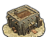

RTR: Imperium Surrectum
RTR: Imperium SurrectumState Mint (Civic) chain
2 levels, each replacing the one before it — you upgrade in place rather than building alongside.
State Mint (Civic) → Great Mint (Civic)
Pictures are the game's own building art. Where a culture ships none of its own, the game falls back to another culture's, and that is what is shown here.
Levels at a glance
| Level | Cost | Build time | Minimum settlement | Upgrades to | Excludes | |
|---|---|---|---|---|---|---|
 | State Mint (Civic) | 10,000 | 5 | city | Great Mint (Civic) | Local Mint (Civic) |
| Great Mint (Civic) | 17,500 | 10 | huge city | — | — |
Costs in denarii, build time in turns.
State Mint (Civic)

The game ships no picture of its own for this level and shows the Great Academy (Civic) picture instead.
A State Mint strengthens control and boosts the economy, but they remind the locals that independence is still a distant dream.
He who controls the coin, controls the people.
A Centralized Mint is a statement of authority. No matter where you are in the empire, the coin is the same, and it bears the mark of the ruling faction. By centralizing the mint, the ruling faction maintains control over the currency, thus unifying trade, at least for now, and ensuring that all wealth flows back to the capital. Of course, the locals in more far away lands ruled by us won’t be happy about it, and unrest may rise as they grumble about the foreign designs and the subtle reminder of their dependence. Still, the economic benefits are undeniable, as long as you keep things under control.
Also, let’s be honest: no one really likes paying with someone else’s face on their coins for too long.
Historically, the mint was a source of wealth and control. The Ptolemies, for example, tried to make an inner economy and only allowed to use their coins. The mint in many cases was a symbol of independence. In case of Bosporan Kingdom, during the time of consolidation of power, kings allowed mint only in the capital, while before there were at least 5-6 another mints. The decentralization of the kingdom in the II BCE, even without any written sources, could be seen through the sudden appearance of new minting locations. The person who controlled the mint influenced all others who used those coins, as he decided: what will be on coin (propaganda), from which metal it will be made, and how much was the coin worth.
Wording varies by culture: 2 versions of this description exist in the game files.
| Cost | 10,000 denarii | Build time | 5 turns | Minimum settlement | city | Upgrades to | Great Mint (Civic) |
What it does
Show 9 effects that apply only in the circumstances shown
- +10 taxable income — only when
not copper_building_supply and not resource silver and minting_factions - +14 taxable income — only when
minting_factions and copper_building_supply and not resource silver - +14 taxable income — only when
minting_factions and not copper_building_supply and resource silver - +14 taxable income — only when
minting_factions and copper_building_supply and resource silver - +1 trade income — only when
minting_factions and not resource gold and not resource silver - +2 trade income — only when
minting_factions and not resource gold and resource silver - +2 trade income — only when
minting_factions and resource gold and not resource silver - +2 trade income — only when
minting_factions and resource gold and resource silver - +1 public order (law) — only when
minting_factions
Excludes: building this rules out Local Mint (Civic). Choose deliberately — this is not reversible by demolition in every case.
Great Mint (Civic)

The game ships no picture of its own for this level and shows the Academy (Civic) picture instead.
An Imperial Mint strengthens control and boosts the economy, not just of this city, but of the realm
This city has been granted the highest honour, to produce the coinage that fuels our empire.
The royal mints are usually established in very important, as well as very secure cities. This also means that whoever the regional governor was, he controlled a source of great wealth and ideological importance, making him an important and dangerous figure.
Wording varies by culture: 2 versions of this description exist in the game files.
| Cost | 17,500 denarii | Build time | 10 turns | Minimum settlement | huge city |
What it does
Show 10 effects that apply only in the circumstances shown
- +1 public order (law) — only when
not resource gold and minting_factions - +2 public order (law) — only when
resource gold and minting_factions - +14 taxable income — only when
not copper_building_supply and not resource silver and minting_factions - +20 taxable income — only when
minting_factions and copper_building_supply and not resource silver - +20 taxable income — only when
minting_factions and not copper_building_supply and resource silver - +20 taxable income — only when
minting_factions and copper_building_supply and resource silver - +2 trade income — only when
minting_factions and not resource gold and not resource silver - +3 trade income — only when
minting_factions and not resource gold and resource silver - +3 trade income — only when
minting_factions and resource gold and not resource silver - +3 trade income — only when
minting_factions and resource gold and resource silver
What the shorthands in those conditions stand for (2)
These are the mod's own, quoted from the game files unchanged.
| Shorthand | Stands for | Shorthand | Stands for | ||||
|---|---|---|---|---|---|---|---|
copper_building_supply | resource copper or hidden_resource copper_supply_built factionwide | minting_factions | factions { carthaginian, barbarian, iberian, celtiberian, eastern, anatolian, illyrian, egyptian, thracian, iranian, arab, indian, greek, w_hellenistic, e_hellenistic, roman, } |